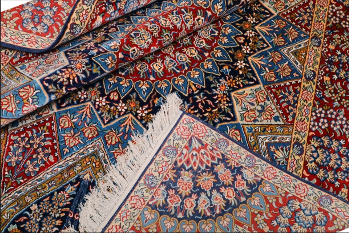
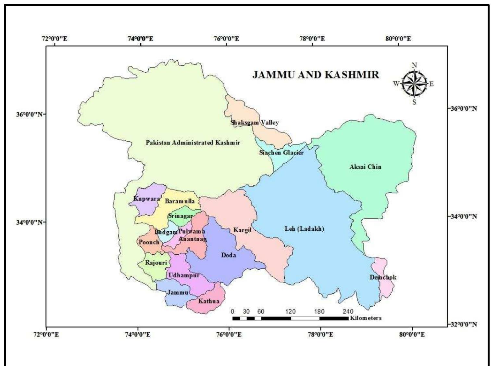

Glimpses of Culture




Paradise on Earth
Jammu & Kashmir is known for its breathtaking landscapes, snow-capped mountains, beautiful valleys, and serene lakes. Often called the "Paradise on Earth," it is rich in natural beauty, cultural diversity, and historical heritage. The region attracts visitors from around the world with its scenic destinations, traditional handicrafts, and warm hospitality.
Capital: Srinagar (Summer), Jammu (Winter)
Union Territory of India
Known as "Paradise on Earth"
Famous for apples, saffron, Pashmina shawls, and handicrafts
Major Languages: Kashmiri, Dogri, Urdu, Hindi, and English

Jammu & Kashmir is home to many famous tourist destinations including Srinagar, Gulmarg, Pahalgam, Sonmarg, Vaishno Devi Temple, Dal Lake, Mughal Gardens, and Betaab Valley. These places attract millions of visitors every year with their scenic beauty and spiritual significance.


The folk traditions of Jammu & Kashmir reflect its rich cultural heritage and harmonious blend of different communities. Traditional dances such as Rouf and Dumhal are performed during festivals and celebrations. Kashmiri music, poetry, and handicrafts like Pashmina shawls, carpets, and papier-mâché showcase the artistic excellence of the region. Festivals such as Eid, Lohri, Baisakhi, and Navroz are celebrated with enthusiasm, preserving the unique customs and cultural identity of Jammu & Kashmir across generations.
